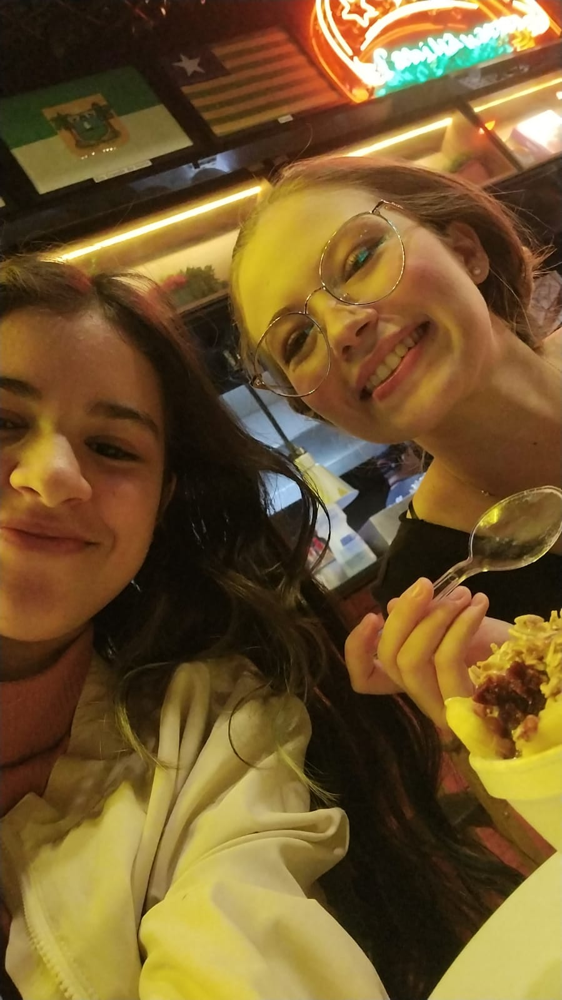
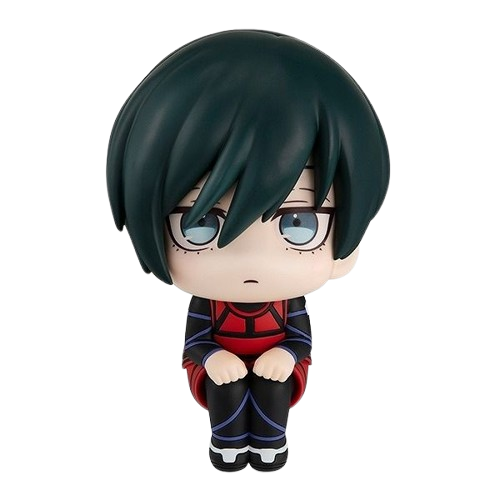

Esse site foi desenvolvido por mim, Ana Caroline Garcia, aluna do instituto J&F. Quis deixar ele com a minha cara, adicionando as exigencias do professor. Usei HTML,CSS e um pouco de JavaScript :o

No dia em que a minha familia foi na CTN(Centro de tradições Nordestinas) para comemorar meu aniversário. A na direita é a minha irmã mais velha, Kemilly.
Esse site foi desenvolvido por mim, Ana Caroline Garcia, aluna do instituto J&F. Quis deixar ele com a minha cara, adicionando as exigencias do professor. Usei HTML,CSS e um pouco de JavaScript :o


Fui visitar a minha familia para comemorar meu aniversário e ano novo com eles. Passei por Caruaru e Xique Xique..

Uma das experiencias mais marcantes da minha vida. Fiquei um final de semana numa mansão com lareira e companhias incriveis, e claro, aproveitei o turismo local.

França porque quero muito conhecer London e fazer intercambio por lá. É uma cidade linda, a cultura é linda e é surreal de lindo

Japão por conta da minha paixão por comida japonesa, e conhecer uma cultura tão diferente parece interessante para repertório cultural.

Iphone barato e ganhar em dólar